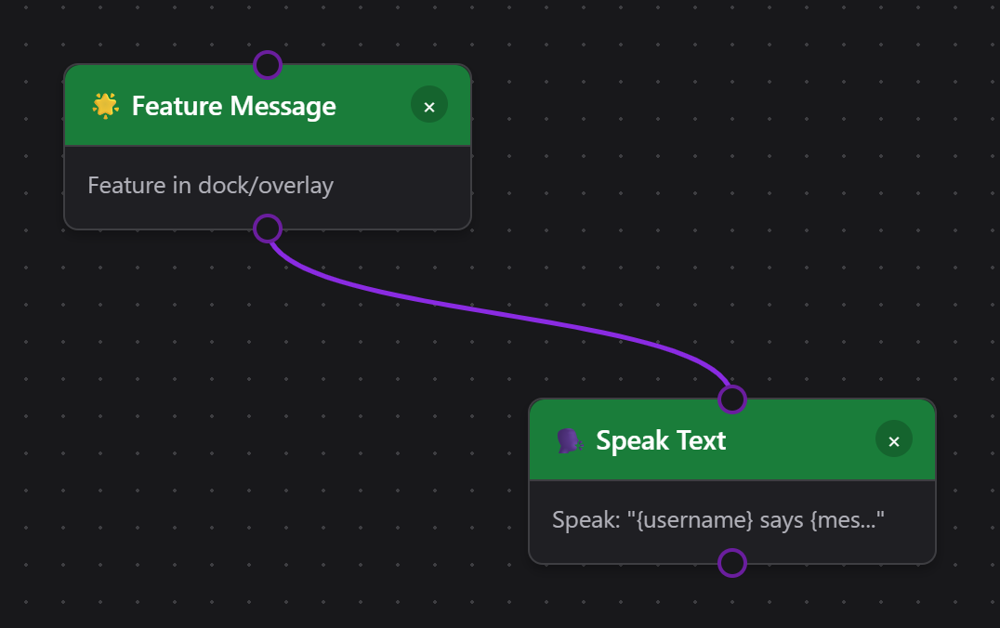
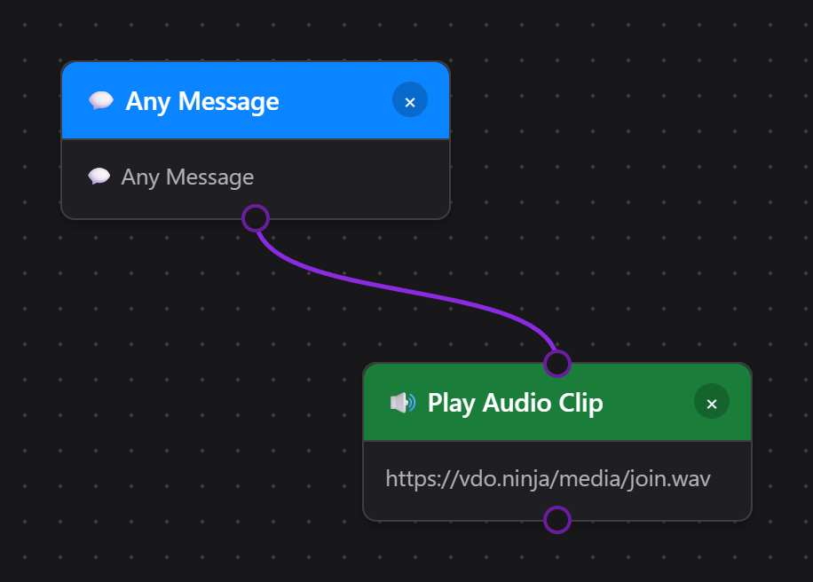
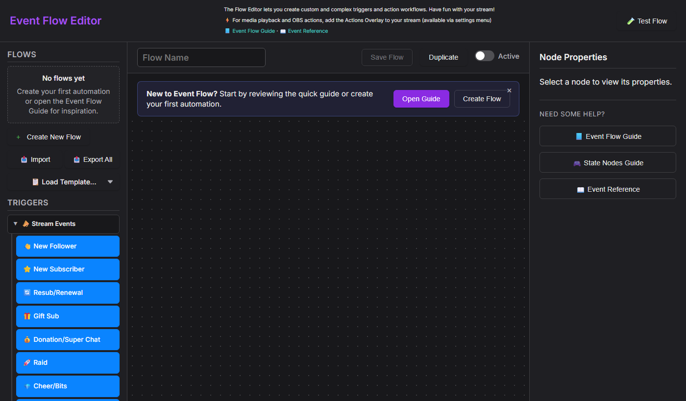
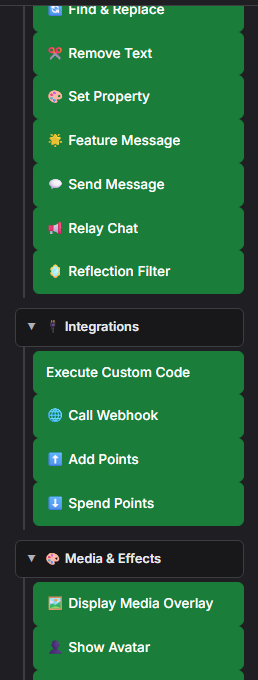
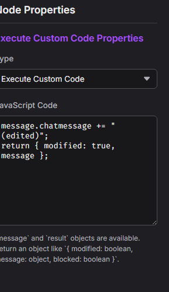
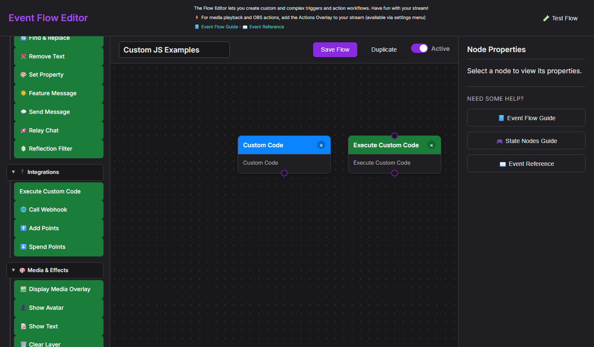
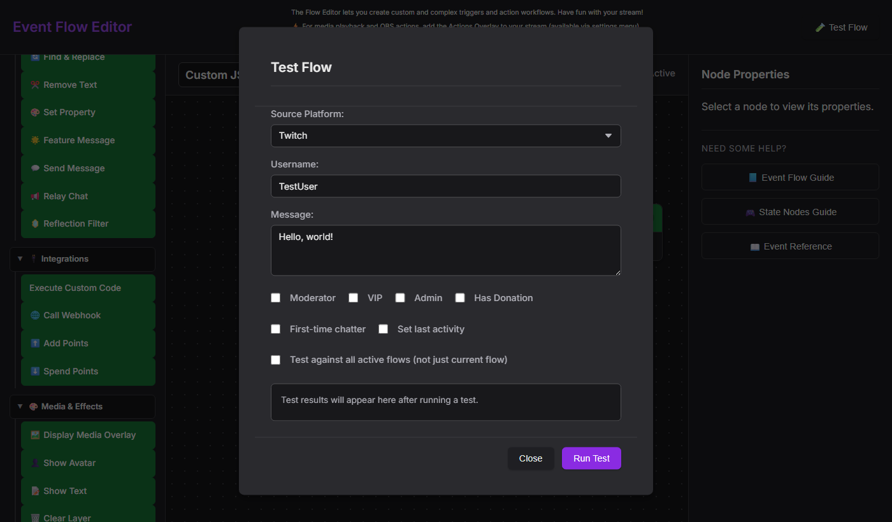

0. Orientação rápida
O que é este editor?
O editor do Event Flow é a camada de “automação avançada” do Social Stream Ninja. Ele fica acima das opções simples do popup e permite programar sua própria lógica de roteamento. Use quando precisar:
- Repasse chat entre serviços com filtros (por exemplo, espelhe Twitch no Discord, mas bloqueie comandos).
- Crie comandos baseados em fidelidade, jogos de palavras-chave ou critérios de participação em sorteios com lógica AND/OR/NOT.
- Acione sobreposições personalizadas, áudio, cenas do OBS ou webhooks com base em dados que você enriquece no fluxo.
- Combine várias plataformas em uma automação (Kick + Twitch + YouTube roteados por um fluxo).
Pense no popup como “predefinições rápidas” e no Event Flow como as ferramentas para fluxos personalizados.
Início e fundamentos
- Abra o editor do Event Flow pelo menu do painel principal (desktop ou extensão).
- Cada projeto é salvo localmente até ser exportado. Use
Exportpara fazer backup ou compartilhar. - Trabalhe em áreas de edição chamadas fluxos. Cada fluxo pode se inscrever em várias plataformas ao mesmo tempo.
Visão geral dos nós
- Entradas (portas à esquerda) esperam o contexto da mensagem.
- Saídas (portas à direita) emitem o mesmo contexto com as edições.
- Nós lógicos podem emitir o canal
truee um canal opcionalfalse.
Estrutura do payload
Cada mensagem carrega um objeto JSON. As chaves obrigatórias seguem docs/event-reference.html (platform, type, chatname, chatmessage etc.). Anexe dados personalizados em meta.
Todo fluxo começa com um gatilho
Nós de ação (verdes) nunca são executados sozinhos — só são acionados quando um nó de gatilho (azul) acima deles avalia como true. Um fluxo feito apenas de ações encadeadas parece válido, mas fica permanentemente inativo, porque nada inicia a sequência. Os nomes dos nós descrevem o que o nó faz, não quando acontece: Destacar mensagem destaca uma mensagem quando o fluxo chega a ele — não aciona quando você destaca uma mensagem em outro lugar.


Sobreposição Flow Actions (saída de ações)
Escolha Doação: comemoração + voz para uma animação pronta e um clipe sintético de agradecimento, ou o modelo avançado Doação: animação + som + filtro do OBS . Novos modelos de alerta começam desativados para que você possa configurar e testar primeiro. Para o modelo do OBS, escolha uma fonte e o mesmo filtro normalmente desativado nas duas ações de filtro.
Reproduzir clipe de áudio e Multi-Alerts agora compartilham uma biblioteca de 17 sons: aplausos, rufar de tambores, passagem rápida, caixa registradora e outros efeitos, quatro frases sintéticas em inglês identificadas e sons simples. Escutar / Parar reproduz uma prévia local com status visível de reprodução. Você ainda pode enviar uma gravação ou escolher um arquivo local do aplicativo. Para nomes ou mensagens variáveis, use a ação existente Falar texto .
O Event Flow reproduz pela fonte de navegador Flow Actions ; Multi-Alerts reproduz pela própria fonte de navegador. Mantenha o som ativado em apenas uma delas para o mesmo evento, evitando reprodução duplicada. Use Tab para ir a um nó do fluxo e Enter ou Espaço para editar suas propriedades.
Nós como Reproduzir clipe de áudio, Exibir sobreposição de mídia, e os controles do OBS precisam de uma página para renderização. Essa página é a sobreposição Flow Actions servida em actions.html. Mantenha em execução no software de transmissão (OBS/docks de navegador do Streamer.bot/etc.) para que as ações do Event Flow tenham onde aparecer.

- Abra o popup principal do Social Stream Ninja (a janela carregada de popup.html ou pelo ícone da extensão).
- Role até o cartão “Flow Actions”. Use o botão [copiar link] ou clique na URL dentro do cartão.
- O link se parece com
https://socialstream.ninja/actions.html?session=YOURSESSION. Cole em uma fonte de navegador do OBS (sugerido: 1920×1080) ou abra em qualquer navegador de sobreposição.
- Em uma ação Reproduzir clipe de áudio ou Exibir sobreposição de mídia, clique em Escolher arquivo local.
- Clique em Copiar URL local de Flow Actions para OBS e use a URL localhost gerada em vez da URL hospedada de Flow Actions.
- Mantenha o SSApp em execução. Se um arquivo selecionado mudar de lugar, volte à ação e clique em Revincular.
A extensão do Chrome não pode servir arquivos do disco sozinha. Use Upload ou uma URL hospedada quando não houver aplicativo complementar de desktop. Consulte o guia de arquivos de mídia para Event Flow para a configuração completa.
Depois de carregada, essa sobreposição pode:
- Mostrar GIPHY ou URLs diretas de mídia, texto e confete acionados pelos fluxos.
- Reproduzir sons (TTS, clipes de áudio) localmente para que os espectadores ouçam.
- Comunique-se com o OBS pelas configurações de WebSocket na seção Flow Actions do popup (troca de cenas, alternância de fontes, atualizações de texto GDI+/FreeType, buffer de replay etc.).
- API de fonte de navegador: disponível somente quando
actions.htmlestá em execução dentro de uma fonte de navegador do OBS com Nível de acesso avançado. A troca de cenas funciona aqui, e ações de gravação / transmissão / buffer de replay podem recorrer a ela. - OBS WebSocket: recomendado para controle consistente. O Flow Actions do Social Stream Ninja usa a API OBS WebSocket v5 do OBS 28+ e espera o conjunto moderno de solicitações na porta
4455. - Senha: opcional. Acrescente somente
&obspw=...à URL de Flow Actions se seu servidor OBS estiver configurado para exigir autenticação. - Diagnósticos da sobreposição: acrescente
&obsdebug=1à URL deactions.htmlse quiser um pequeno indicador ao vivo da conexão com OBS na sobreposição durante a solução de problemas. - Definir fonte de texto: atualiza diretamente as entradas Texto (GDI+) e Texto (FreeType 2) do OBS e aceita variáveis de modelo do Event Flow, como
{counterValue}e{counterTarget}. - Instalações antigas 4.x: se você ainda usa obs-websocket 4.x / porta
4444, ações de fonte / filtro / mudo / texto não funcionarão até que OBS / obs-websocket seja atualizado.
Veja o guia específico Guia de controle do OBS para cada gatilho, ação, etapa de configuração e exemplo testado.
- Abrir obs-websocket-test.html.
- Confirme que
GetVersion,GetCurrentProgramScene, eGetSceneListsejam bem-sucedidos. - Execute ali a verificação da ação correspondente antes de testar a automação completa do Event Flow.
1. O que passa por um nó?
O mecanismo do Event Flow passa duas coisas por cada conexão:
- Payload – o objeto de dados do evento ou mensagem.
- Sinal da porta – um bit true/false que informa ao próximo nó se deve executar.
false em um nó de condição). Isso facilita criar lógica alternativa sem duplicar fluxos inteiros.
Expectativas de entrada
- Fontes de eventos (Mensagem da Twitch, Temporizadores, Gatilho manual etc.) ignoram entradas anteriores — geram seu próprio payload e sempre emitem
truea menos que o próprio nó apresente erro. - Nós de transformação e lógica leem o payload e podem reescrever campos, definir estado ou mudar o sinal da porta para
false. - Nós de ação acionam somente quando a porta permanece
true. Ainda podem produzir um payload atualizado se você quiser continuar encadeando ações.
Padrões de saída
Saída única
A maioria dos nós expõe uma saída. Tudo que entra (payload + porta) sai sem alterações, a menos que o nó edite.
Saídas verdadeiro/falso
Nós de condição, comparação, regex e lógica emitem duas portas. Verdadeiro continua pela porta verde; false fica disponível na porta cinza/vermelha.
Repasse versus substituição
Alguns nós (Definir variável, Matemática, Substituir texto) alteram o payload, mas ainda encaminham o estado true/false da entrada. Outros (NOT, AND, OR) recalculam o booleano por conta própria.
2. Referência rápida de nós lógicos
Estes blocos respondem às perguntas mais comuns sobre “O que true/false significa?”.
NOT
- Entradas: 1 booleano (true/false) derivado do nó anterior.
- Saídas: o booleano invertido e o payload intacto.
- Comportamento padrão: Se nada estiver conectado à entrada do NOT, ele é avaliado como
false, então a saída étrue.
AND
- Entradas: dois ou mais sinais booleanos (A, B, ...). Você pode deixar portas extras vazias.
- Saídas:
truesomente se todas as entradas conectadas forem iguais atrue. - Use AND quando várias condições precisarem ser satisfeitas simultaneamente ("é inscrito" e "mensagem do chat contém !raffle").
OR
- Emite
truese qualquer entrada conectada é verdadeira. - Ótimo para gatilhos de várias plataformas: conecte nós de mensagens Twitch + YouTube a um único OR e unifique a ação seguinte.
Não. Muitos nós já oferecem filtros combinados (por exemplo, "Filtrar nível de usuário" + "Contém texto"). Use AND somente quando as opções integradas não cobrirem sua combinação ou quando quiser uma junção lógica reutilizável que outras ramificações possam compartilhar.
true. Mantenha-o conectado a algo relevante ou desative o nó para que não desbloqueie um fluxo por acidente.
3. Exemplos de pequenos fluxos
A. Responder automaticamente, exceto se a mensagem for um comando
Aqui o nó Regex emite true quando a mensagem é um comando. Encaminhamos o conector false à nossa resposta, para que participantes normais recebam uma confirmação enquanto comandos apenas passam adiante.
B. Exigir várias verificações com AND
O nó AND garante que somente membros usando a palavra-chave correta sejam repassados ao Discord. As duas ramificações enviam seu resultado booleano ao nó AND; o payload da primeira ramificação continua nas etapas seguintes.
C. Nó NOT para bloquear alertas repetidos
State Check emite o valor true quando o alerta está silenciado. Ao inverter esse resultado, o nó NOT garante que só reproduziremos a comemoração quando a marca estiver false.
D. Reproduzir aleatoriamente um de dois sons

A porta AND não é opcional. Um NOT sozinho produziria true sempre que a porta RANDOM estiver inativa, então o som B tocaria em toda mensagem de chat que não corresponda ao gatilho. Alimentar o AND com o gatilho como segunda entrada restringe o som B apenas às mensagens correspondentes. O mesmo padrão funciona para qualquer par de ações alternativas, não apenas áudio.
4. Evitar ecos, loops e retornos de repasse
Repassar chat entre ambientes é poderoso, mas pode gerar ecos infinitos se você escutar sua própria saída. Siga estas precauções:
Tanto os gatilhos de entrada quanto os destinos de saída de Repassar chat distinguem entre
youtube e youtubeshorts. Use duas ações de repasse quando uma mensagem precisar chegar às duas variantes. Consulte YouTube Shorts e Event Flow.
Um eco é uma mensagem enviada que é capturada novamente no chat de destino. As ações atuais de Repassar chat ignoram esses ecos reconhecidos; não existe uma caixa separada No Reflections. Para ocultar ou limitar sua exibição no Dock e nas sobreposições, use uma ação Filtro de ecos (Reflection Filter) com Bloquear todos (Block All), Permitir primeiro (Allow First), ou Permitir todos (Allow All). Isso controla a exibição na recaptura, não o envio. Siga o Passo a passo de repasse de Twitch e YouTube para uma configuração completa.
- Evite sistemas de repasse duplicados. Desative Repassar tudo global ao usar rotas equivalentes do Event Flow e verifique outros serviços que conectem os mesmos chats. Não há garantia de que metadados personalizados sobrevivam à passagem pelo chat de uma plataforma.
- Use nós de debounce ou intervalo de espera para alertas que devem acionar apenas uma vez a cada X segundos.
- Interrompa ciclos intencionalmente. Se duas ramificações alimentarem uma à outra, adicione um nó lógico que verifique uma variável de estado ("currentlyRelaying") para que o fluxo encerre cedo quando a marca estiver definida.
5. Entradas, saídas e perguntas práticas
O que entra em um nó?
- O payload completo da mensagem.
- O bit da porta (
true/false). - Contexto opcional (variáveis de estado, temporizadores) que o nó solicita explicitamente.
O que sai de um nó?
- O mesmo payload, a menos que o nó o edite.
- Um bit de porta recalculado (nós lógicos) ou um bit repassado (ações).
- A maioria dos efeitos colaterais (como enviar chat) não altera o payload, mas ações de pontos podem anexar campos de status, como
pointsTotaloupointsSpendErrorpara lógica nas etapas seguintes.
Quando criar ramificações?
Sempre que quiser reagir de modo diferente a true versus false. Arraste um fio da saída colorida necessária (verde = verdadeiro, cinza/vermelho = falso) para o próximo nó.
false , o fluxo simplesmente termina ali. Isso é ideal para filtros ("bloquear tudo que falhar na verificação"), mas não esqueça de conectar o caminho false se precisar de alternativas.
Perguntas e respostas comuns
- Preciso usar AND para cada par de filtros? Não. Muitos nós incluem várias verificações (por exemplo, o filtro básico de mensagens suporta palavra-chave + função). Use AND apenas para combinações avançadas ou ao unir sinais de nós diferentes.
- Como valores true/false chegam ao nó NOT? Qualquer nó com saída verde emite
truepor padrão. Quando uma condição falha, emitefalse. Conecte esse fio a NOT para inverter o resultado. - Um nó pode emitir um payload mesmo retornando false? Sim. O payload ainda passa pela saída false; cabe a você decidir para onde essa ramificação deve ir.
- Como identificar membros de equipe do TikTok? Escolha Membro de equipe do TikTok no nó Função de usuário. Ele reconhece níveis e emblemas de Fan Club/equipe do TikTok na mensagem recebida e não depende das configurações da sobreposição principal de chat.
- Cada nó Falar texto pode usar uma voz diferente? Sim. Insira um nome ou ID de voz compatível com o provedor em Substituição de voz, ou deixe em branco para usar o padrão de TTS de Flow Actions.
6. Referência de variáveis de modelo
Vários nós de ação (Mostrar texto, Definir fonte de texto, Enviar mensagem, Repassar chat, Falar texto, Chamar webhook, Imprimir etiqueta térmica) aceitam variáveis de modelo que são substituídas por dados do evento durante a execução. Coloque nomes de variáveis entre chaves, como {username}.
Variáveis principais (retrocompatíveis)
| Variável | Alias | Descrição | Exemplo |
|---|---|---|---|
{username} | {chatname} | Nome de exibição do usuário | CoolViewer123 |
{message} | {chatmessage} | Texto da mensagem do chat | Olá, pessoal! |
{source} | - | Nome da plataforma (com inicial maiúscula) | Twitch, YouTube |
{type} | - | Nome da plataforma (bruto) | twitch, youtube |
{donation} | {hasDonation} | Rótulo de exibição da doação/gorjeta | $5.00, 500 bits |
Variáveis estendidas
| Variável | Descrição | Exemplo |
|---|---|---|
{displayname} | Nome de exibição (campo alternativo) | CoolViewer123 |
{donoValue} | Equivalente da doação em USD, fornecido ou estimado; o Event Flow deriva os valores de limite a partir de rótulos normalizados hasDonation como valor, $valor, valor + unidade ou unidade/valor compacto. Unidades virtuais nomeadas desconhecidas usam 100 unidades = $0.01 USD; presentes do TikTok sem preço usam uma moeda por presente ($0.01 cada). {donationAmount} é um alias legado | 5.00 |
{event} | Identificador do tipo de evento | cheer, raid, new_follower |
{membership} | Estado de adesão | MEMBERSHIP, new_sponsor |
{subtitle} | Contexto adicional | Membro há 3 meses |
{userid} | ID do usuário na plataforma | 12345678 |
{chatimg} | URL do avatar do usuário | https://... |
{contentimg} | URL da imagem anexada | https://... |
{rewardTitle} | Nome da recompensa quando a fonte disponibiliza um campo de título de recompensa no nível superior | Destacar minha mensagem |
{meta} | Dados estruturados do evento (JSON) | {"viewers":100} |
{counterValue} | Valor atual do contador após uma etapa Contador ou Verificar contador | 12 |
{counterTarget} | Valor da meta do contador | 30 |
{counterRemaining} | Meta do contador menos o valor atual, limitada a no mínimo 0 | 18 |
{USERNAME}, {Username}, e {username} funcionam da mesma forma.
Check Counter disponibiliza {counterValue}, {counterTarget}, e {counterRemaining}.
Modelos de exemplo
- Mostrar texto:
{username} just cheered {hasDonation}! - Definir fonte de texto do OBS:
{username}: now {counterValue}, need {counterTarget} - Repassar chat:
[{source}] {username}: {message} - TTS:
{username} says {message} - Alerta de doação:
{username} donated {donation} - {subtitle} - Etiqueta térmica:
{username}, uma nova linha e depois{donation}. Veja o Guia de impressora térmica para configuração da impressora, etiquetas de tamanho fixo e um fluxo completo. - Chamar webhook do Discord:
{"content":"{message}","username":"{username}","avatar_url":"{chatimg}"}
{donation} em uma mensagem normal de chat), o placeholder é substituído por uma string vazia em vez de mostrar o texto literal {donation} .
7. Lista de boas práticas
- Dê nomes e cores a seus nós para que você reconheça cada ramificação no futuro.
- Teste com o simulador integrado (Enviar evento de teste) antes de colocar um fluxo ao vivo.
- Agrupe a lógica perto da fonte. Filtre o mais cedo possível para evitar processamento adicional nas etapas seguintes.
- Armazene repetições em nós de estado. Use contadores, interruptores e horários para evitar alertas duplicados.
- Documente campos de meta. Quando você adicionar campos personalizados de
meta, documente-os para manter sobreposições e clientes remotos consistentes.
8. Exploração adicional
Executar fluxos personalizados pelo Stream Deck ou API: gatilhos nomeados, modelo inicial, descoberta de fluxos, dados extras, exemplos de HTTP/WebSocket/P2P e gestos de controles giratórios.
Pronto para aprofundar?
- Use Nós de estado (contadores, interruptores, temporizadores) para acompanhar o contexto entre eventos.
- Combine Variáveis + lógica para criar sistemas de fila, sorteios ou mecanismos de pontuação.
- Conecte-se ao sistema Pontos e recompensas para que os espectadores possam acionar fluxos intencionalmente.
- Você usa o aplicativo SSApp para desktop? Desbloquear Nós de JavaScript personalizado para lógica arbitrária que nenhum nó integrado cobre.
- Consulte a Referência de eventos para documentação detalhada dos payloads em todas as plataformas.
Este guia é independente intencionalmente — copie-o localmente, adapte-o à sua equipe e continue experimentando no editor.
9. JavaScript personalizado Somente SSApp / desktop
Dois nós do editor do Event Flow permitem escrever JavaScript arbitrário executado dentro do processamento do fluxo: Código personalizado (gatilho) e Executar código personalizado (ação). São a alternativa para tudo o que os nós integrados não conseguem expressar.
new Function() / eval(). Abra o editor pelo Aplicativo SSApp para desktop para ativá-los. No modo de extensão, os nós aparecem acinzentados com o rótulo "Somente desktop".
Ctrl+S ou Cmd+S faz o mesmo. Cancelar deixa o nó inalterado.

Código personalizado — nó de gatilho
Arraste Código personalizado a partir do grupo Avançado do painel Gatilhos para a área de edição. Atua como uma porta: o fluxo continua somente quando seu código retorna true.


true ou false.function(message) { ... }Deve retornar: um booleano —
true para permitir que o fluxo continue, false para interromper.Disponível: o objeto
message (veja API de mensagens abaixo), mais convertCurrency(value, targetCurrency, source) e convertToUSD(value, source).
Executar código personalizado — nó de ação
Arraste Executar código personalizado a partir do grupo Integrações do painel Ações . Pode alterar a mensagem, bloqueá-la ou anexar metadados que os nós seguintes podem ler.


function(message, result) { ... }Deve retornar: um objeto ou Promise mesclado em
result— veja API de resultados.Disponível:
message (o payload do evento), result (estado atual do resultado do fluxo), printThermal(html, options), mais convertCurrency(value, targetCurrency, source) e convertToUSD(value, source).
printThermal('<strong>' + message.chatname + '</strong>'). O SSApp enfileira o trabalho silenciosamente pela API nativa de impressora do Windows e usa essas configurações salvas. Um fluxo pode substituí-las com opções como { width: '58mm', marginLeft: '3mm', marginRight: '3mm', marginTop: '2mm', marginBottom: '2mm', feed: '3mm', marginType: 'printableArea' }. Retornar a Promise permite que o Event Flow aguarde o envio e relate erros.

O objeto message
Os dois nós recebem o payload completo do evento como message. Os campos abaixo estão sempre disponíveis; eventos específicos de plataforma podem incluir outros.
| Campo | Tipo de dado | Descrição | Exemplo |
|---|---|---|---|
message.chatmessage | string | O texto da mensagem do chat (pode conter HTML) | "Hello stream!" |
message.chatname | string | Nome de exibição do remetente | "CoolViewer" |
message.userid | string | ID de usuário da plataforma | "12345678" |
message.type | string | Plataforma de origem (minúsculas) | "twitch", "youtube", "kick" |
message.hasDonation | string | String formatada de doação, se presente | "$5.00", "500 bits" |
message.donoValue | número / string | Equivalente da doação em USD quando fornecido pela fonte; valores zero válidos são respeitados. O Event Flow usa como alternativa currency.js para converter rótulos normalizados de hasDonation para comparações de limites, incluindo 100 unidades nomeadas desconhecidas = $0.01 USD. Ele não interpreta o texto descritivo de chatmessage para valores de doação. | 5 |
message.event | string | Identificador do tipo de evento | "new_follower", "cheer", "raid" |
message.membership | string | Estado de adesão, quando aplicável | "MEMBERSHIP" |
message.subtitle | string | Linha secundária de contexto | "Member for 3 months" |
message.mod | booleano | O remetente é moderador | true |
message.subscriber | booleano | O remetente é inscrito | true |
message.vip | booleano | O remetente é VIP | true |
message.chatimg | string | URL do avatar do usuário | "https://..." |
message.meta | objeto | Dados estruturados arbitrários anexados ao evento | { viewers: 120 } |
convertCurrency(message.hasDonation, 'EUR', message.type) para converter o rótulo formatado de doação em EUR. Retorna um número ou null quando a moeda de destino solicitada não é compatível. O conversor usa as taxas internas aproximadas do Social Stream Ninja; não consulta um serviço externo de câmbio.
O que a ação retorna
Retorne um objeto simples no código da ação. Todos os campos incluídos são mesclados no objeto result ; campos omitidos mantêm seus valores atuais.
| Campo de retorno | Tipo de dado | Efeito |
|---|---|---|
modified | booleano | Defina true se você alterou campos de message . Informa aos nós seguintes que o payload foi editado. |
message | objeto | Retorne a mensagem (possivelmente alterada) para que os nós seguintes recebam suas mudanças. |
blocked | booleano | Defina true para impedir que a mensagem seja exibida ou repassada. |
return { modified: false, message };Mesmo que você não tenha alterado nada, retornar
message mantém o fluxo para o próximo nó.
Exemplos de trechos
Copie qualquer um destes trechos para a área JavaScript Code do tipo de nó correspondente.
Trechos de gatilho — retorne true para continuar o fluxo
!queue, !raffle, !enter).Trechos de ação — retorne { modified, message }
{meta}).Exemplo completo — bot de pedidos de recursos para VIPs
Este fluxo escuta !feature <text> de inscritos, VIPs ou moderadores, reformata como um pedido de um recurso e repassa a um segundo destino (por exemplo, Discord).
Etapa 1 — Gatilho de código personalizado (cole no campo JavaScript Code do gatilho):
Etapa 2 — Ação Executar código personalizado (cole no campo JavaScript Code da ação):
Etapa 3 — Ação Repassar chat: adicione um nó padrão Repassar chat após a ação e configure-o para seu destino Discord (ou outro). Não é necessário código personalizado aqui — a mensagem reformatada message.chatmessage passa automaticamente.
!feature dark mode support, e confirme que o destino de Repassar chat recebe a string reformatada.

Considerações de segurança
window e quaisquer APIs disponibilizadas pelo script de pré-carregamento (por exemplo, window.ninjafy). Trate arquivos de fluxo importados como código executável — importe somente de fontes confiáveis.
- Sem sandbox de rede. O código da ação pode chamar
fetch(). Se você aceitar fluxos compartilhados por outras pessoas, revise o JS antes de ativá-los. - Erros são capturados. Um erro de execução no seu código retorna
false(gatilho) ou nenhuma operação (ação) e registra no console do DevTools — o fluxo não trava. - Erros de sintaxe também. Um erro do tipo
SyntaxErrorna compilação é capturado da mesma forma. Verifique o DevTools (F12) se um nó parecer não fazer nada.